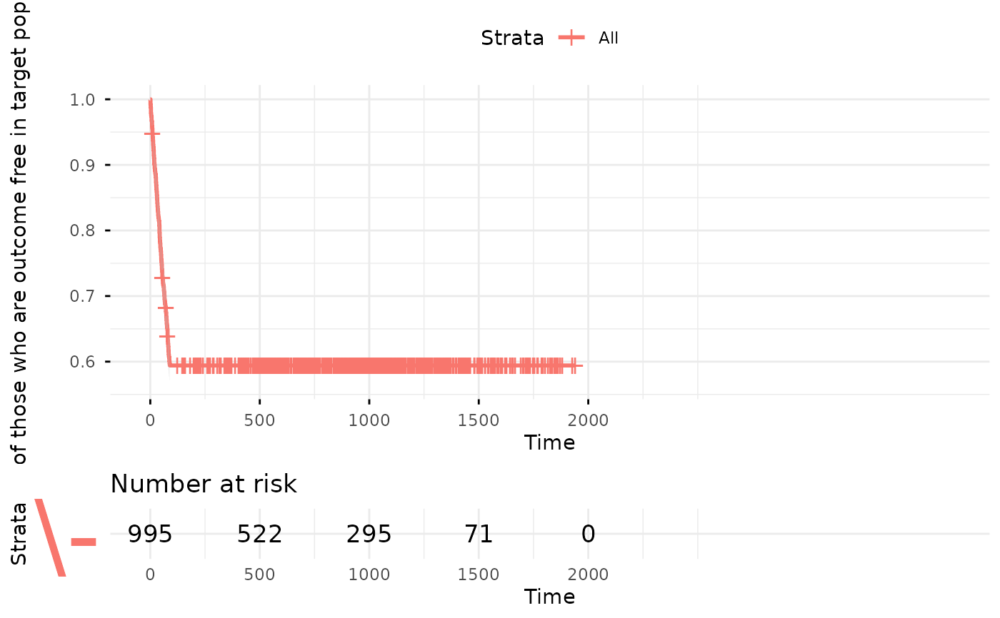

Plot the outcome incidence over time
Usage
outcomeSurvivalPlot(
plpData,
outcomeId,
populationSettings = createStudyPopulationSettings(binary = TRUE, includeAllOutcomes =
TRUE, firstExposureOnly = FALSE, washoutPeriod = 0, removeSubjectsWithPriorOutcome =
TRUE, priorOutcomeLookback = 99999, requireTimeAtRisk = FALSE, riskWindowStart = 1,
startAnchor = "cohort start", riskWindowEnd = 3650, endAnchor = "cohort start"),
riskTable = TRUE,
confInt = TRUE,
yLabel = "Fraction of those who are outcome free in target population"
)Arguments
- plpData
The plpData object returned by running getPlpData()
- outcomeId
The cohort id corresponding to the outcome
- populationSettings
The population settings created using
createStudyPopulationSettings- riskTable
(binary) Whether to include a table at the bottom of the plot showing the number of people at risk over time
- confInt
(binary) Whether to include a confidence interval
- yLabel
(string) The label for the y-axis
Examples
data("simulationProfile")
plpData <- simulatePlpData(simulationProfile, n=1000)
#> Generating covariates
#> Generating cohorts
#> Generating outcomes
plotObject <- outcomeSurvivalPlot(plpData, outcomeId = 3)
#> outcomeId: 3
#> binary: TRUE
#> includeAllOutcomes: TRUE
#> firstExposureOnly: FALSE
#> washoutPeriod: 0
#> removeSubjectsWithPriorOutcome: TRUE
#> priorOutcomeLookback: 99999
#> requireTimeAtRisk: FALSE
#> minTimeAtRisk: 364
#> restrictTarToCohortEnd: FALSE
#> riskWindowStart: 1
#> startAnchor: cohort start
#> riskWindowEnd: 3650
#> endAnchor: cohort start
#> restrictTarToCohortEnd: FALSE
#> Removing subjects with prior outcomes (if any)
#> Removing subjects with no time at risk (if any)
#> Outcome is 0 or 1
#> Population created with: 1000 observations, 1000 unique subjects and 455 outcomes
#> Population created in 0.0424 secs
print(plotObject)
